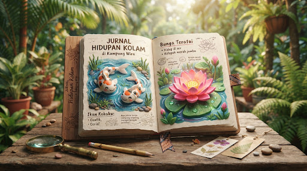

Jurnal Hidupan Kolam Ajaib 🪷
Terokai rahsia keindahan ikan koi dan bunga teratai yang hidup harmoni di Kolam Teratai Kampung Wira!

“Subhanallah! Haiwan dan tumbuhan air mempunyai ciri-ciri istimewa yang dicipta untuk hidup di air jernih. Jom teliti kad fakta saintis cilik kita!”
Ikan Koi (Kohaku & Sanke)
Hidupan Air TawarHabitat: Hidup di air tawar yang jernih, tenang, dan kaya dengan oksigen.
Bahagian Tubuh: Mempunyai sisik berkilat, sirip gebu untuk meluncur riang, dan insang menyerap udara di dalam air.
Makanan: Palet bijirin berkhasiat, lumut lembut, dan serangga kecil air.
Nilai Murni & Akhlak: Amalan berihsan memberi makan haiwan membawa berkat, kasih sayang, dan ketenangan jiwa.
Bunga Teratai (Nymphaea)
Tumbuhan Berbunga TerapungDaun Telepok: Daun lebar berlilin bulat yang terapung kemas di permukaan air untuk menyerap limpahan cahaya suria.
Kelopak Bunga: Mekar berseri pada waktu pagi memancarkan warna merah jambu lembut dan wangi semerbak.
Akar & Batang: Mencengkam kukuh di dasar lumpur kolam sambil menyedut nutrien serta menstabilkan tumbuhan.
Hikmah Alam: Memberi naungan redup dan keselamatan kepada anak-anak ikan daripada terik matahari.
Apakah fungsi utama daun teratai yang lebar dan terapung di atas air?
Petua Si Tapir: Lapisan lilin pada daun teratai menghalang air daripada bertakung agar daun sentiasa ringan dan terapung!